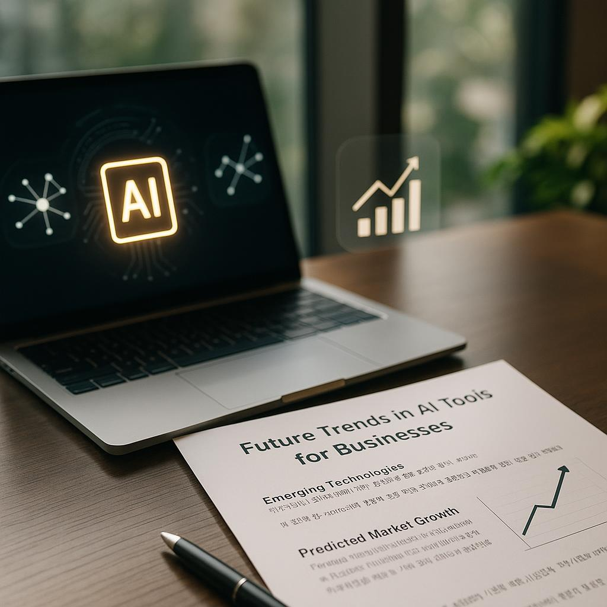

Introduction to AI Tools in Business
2026년에는 비즈니스에 최적화된 인공지능(AI) 도구들이 점점 더 중요해질 것입니다. What Are The Best AI Tools for Businesses in 2026? - tech.co라는 주제에 맞추어, AI 도구들이 어떻게 비즈니스 환경을 혁신하고 있는지 살펴보겠습니다.
Definition of AI Tools
AI 도구는 인공지능 기술을 활용하여 다양한 업무를 수행하고 데이터를 분석하며 의사 결정을 지원하는 소프트웨어 솔루션입니다. 이러한 도구들은 데이터 처리 속도를 빠르게 하고, 보다 정확한 예측을 가능하게 합니다.
Importance of AI in Business
기업들이 AI를 도입하는 이유는 여러 가지가 있습니다. 첫째로, AI는 업무의 효율성을 높이는 데 기여합니다. 예를 들어, 반복적인 작업을 자동화함으로써 인력의 시간을 절약할 수 있습니다. 둘째로, AI는 혁신을 촉진하여 새로운 비즈니스 기회를 창출합니다.

Top AI Tools for Businesses in 2026
2026년 비즈니스에 가장 유용할 AI 도구들을 살펴보겠습니다. 이러한 도구들은 기업의 경쟁력을 높이는 데 필수적인 역할을 할 것입니다.
Tool 1: AI-Powered Analytics
AI 기반의 분석 도구는 데이터에서 인사이트를 추출하여 전략적 결정을 지원합니다. 이를 통해 기업은 시장의 트렌드를 파악하고, 고객의 요구를 더욱 정확히 이해할 수 있습니다.
Tool 2: Customer Service Automation
고객 서비스 자동화 도구는 24시간 고객 지원을 제공하여 고객 만족도를 높입니다. AI 챗봇은 자주 묻는 질문에 대한 답변을 신속하게 제공하며, 이로 인해 인력의 부담을 줄일 수 있습니다.
Tool 3: Predictive Marketing
예측 마케팅 도구는 데이터를 기반으로 고객 행동을 예측하여 맞춤형 마케팅 캠페인을 실행할 수 있게 합니다. 이러한 도구는 고객의 관심사를 기반으로 한 타겟 캠페인을 통해 판매를 증가시킬 수 있습니다.
Choosing the Right AI Tool for Your Business
AI 도구를 선택할 때는 몇 가지 중요한 단계를 거쳐야 합니다. 올바른 도구를 선택하면 비즈니스의 성공 가능성을 높일 수 있습니다.
Assess Your Needs
가장 먼저, 기업이 필요로 하는 기능을 파악해야 합니다. 현재의 문제점을 명확히 하고, 어떤 기능이 필요한지 확인하는 것이 중요합니다.
Evaluate Tool Features
각 도구의 기능을 비교하여 비즈니스의 요구에 가장 적합한 도구를 찾아야 합니다. 기능이 비즈니스 목표와 얼마나 잘 맞는지를 평가하는 것이 중요합니다.
Consider Budget
마지막으로 예산을 고려해야 합니다. 예산 제약이 있다면, 비용 대비 효과가 높은 도구를 선택하는 것이 필수적입니다.

Integrating AI Tools into Your Business Workflow
AI 도구를 비즈니스 워크플로우에 통합하는 과정은 신중하게 계획해야 합니다.
Planning the Integration
AI 도구의 통합을 위해서는 명확한 목표를 설정해야 합니다. 이를 통해 통합의 방향성을 정립할 수 있습니다.
Training Employees
직원들이 새로운 도구를 효과적으로 활용할 수 있도록 교육 세션을 제공해야 합니다. 기술 변화에 대한 저항을 줄이는 데 도움이 됩니다.
Monitoring Performance
AI 도구의 성과를 정기적으로 검토하여 필요한 조정을 해야 합니다. 이를 통해 지속적인 개선이 가능해집니다.

Risks and Challenges of AI Tools
AI 도구를 도입할 때는 몇 가지 위험과 도전에 직면할 수 있습니다.
Data Privacy Concerns
AI 도구를 사용할 때 가장 큰 걱정 중 하나는 데이터 프라이버시입니다. 민감한 정보를 보호하는 것이 필수적입니다.
Implementation Costs
AI 도구를 도입하는 데 드는 비용이 예상보다 높아질 수 있습니다. 예산 초과를 피하기 위해 사전 계획이 필요합니다.
Change Management
직원들이 새로운 시스템에 적응하는 데 저항감을 느낄 수 있습니다. 변화 관리를 통해 이러한 저항을 최소화해야 합니다.

Case Studies: Successful AI Tool Implementations
AI 도구의 성공적인 구현 사례를 통해 그 효과를 살펴보겠습니다.
Case Study 1: Retail Industry
소매업체는 AI 분석 도구를 활용하여 판매량을 증가시켰습니다. 데이터 기반의 인사이트를 통해 고객의 구매 패턴을 분석하고, 맞춤형 마케팅 전략을 수립하였습니다.
Case Study 2: Healthcare Sector
의료 분야에서는 AI 진단 도구가 환자 치료의 질을 개선하는 데 기여하였습니다. AI 기술을 통해 보다 정확한 진단이 가능해졌습니다.

Future Trends in AI Tools for Businesses
AI 도구의 미래는 어떤 방향으로 나아갈까요? 몇 가지 중요한 트렌드를 살펴보겠습니다.
Emerging Technologies
AI 윤리 및 거버넌스에 대한 관심이 높아지고 있으며, 이는 기업들이 AI 도구를 도입하는 데 중요한 요소가 될 것입니다.
Predicted Market Growth
또한, 중소기업(SME)들이 AI 도구를 보다 쉽게 접근할 수 있는 환경이 조성될 것으로 예상됩니다. 이는 AI 시장의 성장을 가속화할 것입니다.
바로 써먹는 팁
- AI 도구의 필요성을 평가하고, 비즈니스 목표에 맞는 도구를 선택하세요.
- 직원 교육을 통해 새로운 도구에 대한 저항을 줄이세요.
- 정기적인 성과 모니터링을 통해 도구의 효과를 극대화하세요.
실전 체크리스트
- 비즈니스의 문제점을 파악했습니다.
- 필요한 기능을 갖춘 도구를 비교했습니다.
- 예산을 설정하고, 비용 효율성을 검토했습니다.
- 직원 교육 계획을 수립했습니다.
- 성공적인 통합을 위한 목표를 설정했습니다.
FAQ
- What are AI tools? AI 도구는 인공지능을 활용하여 업무를 수행하고, 데이터를 분석하며, 의사 결정을 지원하는 소프트웨어입니다.
- How can AI tools benefit my business? AI 도구는 효율성을 높이고, 비용을 줄이며, 전략적 결정을 위한 인사이트를 제공합니다.
- Are AI tools expensive? AI 도구의 비용은 다양하지만, 여러 규모의 비즈니스에 적합한 선택지가 많이 있습니다.
- What industries can benefit from AI tools? 소매, 의료, 금융, 제조 등 거의 모든 산업이 AI 도구의 혜택을 누릴 수 있습니다.
- How do I choose the right AI tool for my business? 비즈니스의 필요를 평가하고, 도구의 기능을 비교하며, 예산을 고려해야 합니다.
- What are the risks associated with using AI tools? 데이터 프라이버시 문제, 구현 비용, 직원 저항 등이 있습니다.
MingMong에서 더 보기
5 Things About South Korea blames Coupang data breach on management failure, not sophisticated attack - Reuters (2026)
5 Things About Anthropic’s new AI tool sends shudders through software stocks - CNN (2026)
참고 링크: 원문 보기